DCE 4.0 -> DCE 5.0 有限场景迁移¶
本文介绍部分场景下 DCE 4.0 -> DCE 5.0 迁移流程。
环境准备¶
- 可用的 DCE 4.0 环境
- 可用的 DCE 5.0 环境
- 可用于数据还原的 Kubernetes 集群，以下简称 还原集群
前置步骤¶
-
在 DCE 4.0 上，安装 CoreDNS 插件。
-
将 DCE 4.0 纳管到 DCE 5.0，纳管步骤参考接入 DCE 4.0， 被纳管到 DCE 5.0 的 DCE 4.0 集群，以下简称 备份集群 。
Note
接入集群时，发行版选择 DaoCloud DCE4 。
-
在纳管的 DCE 4.0 集群上安装 velero，安装步骤参考 安装 velero。
-
将还原集群纳管到 DCE 5.0，通过创建集群方式或接入方式都可。
-
在还原集群中安装 velero，安装步骤参考 安装 velero。
Note
- 被纳管的 DCE 4.0 集群和还原集群中安装的 velero，对象存储配置必须保持一致。
- 如果您需要进行 Pod 迁移，请将表单参数中的 Migration Plugin Configuration 开关打开（velero 5.2.0+ 版本支持此配置）。
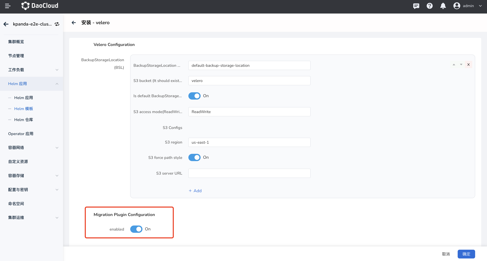
可选配置¶
如果您需要进行 Pod 迁移，请在前置步骤完成后执行以下步骤，非 Pod 迁移场景可以忽略。
Note
以下步骤都在被 DCE 5.0 纳管的还原集群中执行。
配置 Velero 插件¶
-
velero 插件安装完成，可以执行以下 yaml 文件完成 velero 插件的配置。
Note
安装 velero 插件时，必须将表单参数中的 Migration Plugin Configuration 开关打开。
点击查看完整的 YAML 示例
apiVersion: v1 kind: ConfigMap metadata: name: velero-plugin-for-migration # (1)! namespace: velero # (2)! labels: # (3)! velero.io/plugin-config: "velero-plugin-for-migration" # (4)! velero.io/velero-plugin-for-migration: RestoreItemAction # (5)! data: velero-plugin-for-migration: '{"resourcesSelector":{"includedNamespaces":["kube-system"],"excludedNamespaces":["default"],"includedResources":["pods","deployments","ingress"],"excludedResources":["secrets"],"skipRestoreKinds":["endpointslice"],"labelSelector":"app:dao-2048"},"resourcesConverter":[{"ingress":{"enabled":true,"apiVersion":"extensions/v1beat1"}}],"resourcesOperation":[{"kinds":["pod"],"domain":"labels","operation":{"add":{"key1":"values","key2":""},"remove":{"key3":"values","key4":""},"replace":{"key5":["source","dest"],"key6":["","dest"],"key7":["source",""]}}},{"kinds":["deployment","daemonset"],"domain":"annotations","scope":"resourceSpec","operation":{"add":{"key1":"values","key2":""},"remove":{"key3":"values","key4":""},"replace":{"key5":["source","dest"],"key6":["","dest"],"key7":["source",""]}}}]}'- any name can be used; Velero uses the labels (below) to identify it rather than the name
- must be in the velero namespace
- the below labels should be used verbatim in your ConfigMap
- this value-less label identifies the ConfigMap as config for a plugin (i.e. the built-in restore item action plugin)
- this label identifies the name and kind of plugin that this ConfigMap is for.
Note
- 不能修改 plugin 配置 cm 的名字，且必须创建在 velero 命名空间下
- 填写 plugin 配置需注意区分填写资源 resources 还是 kind
- 修改 plugin 配置后需重启 velero pod
- 以下 yaml 是 plugin 配置展示样式，需转换为 json 添加到 configmap 中
如何配置 velero-plugin-for-migration 可参考以下 yaml 和注释
resourcesSelector: # (1)! includedNamespaces: # (2)! - kube-system excludedNamespaces: # (3)! - default includedResources: # (4)! - pods - deployments - ingress excludedResources: # (5)! - secrets skipRestoreKinds: - endpointslice # (6)! labelSelector: 'app:dao-2048' resourcesConverter: # (7)! - ingress: enabled: true apiVersion: extensions/v1beat1 resourcesOperation: # (8)! - kinds: ['pod'] # (9)! domain: labels # (10)! operation: add: key1: values # (11)! key2: '' remove: key3: values # (12)! key4: '' # (13)! replace: key5: # (14)! - source - dest key6: # (15)! - "" - dest key7: # (16)! - source - "" - kinds: ['deployment', 'daemonset'] # (17)! domain: annotations # (18)! scope: resourceSpec # (19)! operation: add: key1: values # (20)! key2: '' remove: key3: values # (21)! key4: '' # (22)! replace: key5: # (23)! - source - dest key6: # (24)! - "" - dest key7: # (25)! - source - ""- plugin 需要处理或者忽略的资源
- plugin 排除 backup 包含的 namespace
- plugin 不处理 backup 包含的 namespace
- plugin 处理 backup 包含的资源
- plugin 不处理 backup 包含的资源
- restore plugin 跳过 backup 内包含的资源，即不执行 restore 操作，该资源需要包含在 includedResources 中，才会被 plugin 捕捉到，该字段需填写资源 kind，不区分大小写
- restore plugin 需要转换的资源，不支持配置具体资源字段转换
- restore plugin 修改 resource/template 的 annotations/labels
- 填写 backup 包含资源 kind，不区分大小写
- 处理 resources labels
- 添加 labels key1:values
- 删除 lables key3:values，匹配 key,values
- 删除 lables key4，只匹配 key，不匹配 values
- 替换 lables key5:source -> key5:dest
- 替换 lables key6: -> key6:dest，不匹配 key6 values
- 替换 lables key7:source -> key7:""
- 填写 backup 包含资源 kind，不区分大小写
- 处理 resources template annotations
- 处理 resources template spec 的 annotations 或者 labels，取决于 domain 配置
- 添加 annotations key1:values
- 删除 annotations key3:values，匹配 key,values
- 删除 annotations key4，只匹配 key，不匹配 values
- 替换 annotations key5:source -> key5:dest
- 替换 annotations key6: -> key6:dest，不匹配 key6 values
- 替换 annotations key7:source -> key7:""
-
velero-plugin-for-dce plugin 获取以上配置后，根据配置对资源做链式操作，例如 ingress 经过 resourcesConverter 处理之后还会经过 resourcesOperation 处理。
镜像仓库替换¶
如果镜像地址发上了变化，可以通过在 Velero 命名空间中创建一个 ConfigMap 来配置映射，完成镜像地址的替换。
此配置适用的迁移资源：pod/deployment/statefulsets/daemonset/replicaset/replicationcontroller/job/cronjob。
Note
- ConfigMap 在还原集群中的 Velero 命名空间中创建。
- 标签为 velero.io/change-image-name: RestoreItemAction 的 ConfigMap 只能配置一个。
- 映射规则只会匹配符合的第一条规则，对应 ConfigMap 中的 case。
apiVersion: v1
kind: ConfigMap
metadata:
name: change-image-name-config # (1)!
namespace: velero # (2)!
labels: # (3)!
velero.io/plugin-config: "" # (4)!
velero.io/change-image-name: RestoreItemAction # (5)!
data:
"case1":"1.1.1.1:5000,2.2.2.2:3000" # (6)!
"case2":"5000,3000"
"case3":"abc:test,edf:test"
"case5":"test,latest"
"case4":"1.1.1.1:5000/abc:test,2.2.2.2:3000/edf:test"
"case5":"dev/,test/" # (7)!
- any name can be used; Velero uses the labels (below) to identify it rather than the name
- must be in the velero namespace
- the below labels should be used verbatim in your ConfigMap
- this value-less label identifies the ConfigMap as config for a plugin (i.e. the built-in restore item action plugin)
- this label identifies the name and kind of plugin that this ConfigMap is for.
- add 1+ key-value pairs here, where the key can be any words that ConfigMap accepts.
the value should be
<old_image_name_sub_part><delimiter><new_image_name_sub_part>for current implementation the<delimiter>can only be "," eg: in case your old image name is 1.1.1.1:5000/abc:test - Please note that image name may contain more than one part that matching the replacing words.
eg: in case your old image names are
dev/image1:devanddev/image2:dev, you want change totest/image1:devandtest/image2:devthe suggested replacing rule is: this will avoid unexpected replacement to the second "dev".
迁移场景¶
资源和数据迁移¶
下文以业务应用迁移作为示例。
迁移情境：有状态应用 StatefulSet + PVC 备份和恢复¶
已知前提：备份集群中某个命名空间下已部署一个有状态应用（StatefulSet），例如 etcd，并挂载了 PVC。
备份
先将需要备份的资源在备份集群中进行备份，流程如下，在此之前，您可以先阅读 应用备份：
-
进入容器管理模块，点击左侧导航栏上的 备份恢复 -> 应用备份 ，进入 应用备份 列表页面。

-
在 应用备份 列表页面，选择备份集群。点击右上角的 备份计划 ，新建一个备份计划。
-
参考下方说明填写备份配置。
- 名称：新建备份计划的名称。
- 源集群：计划执行应用备份的集群。
- 对象存储位置：在源集群安装 velero 时配置的对象存储的访问路径。
- 命名空间：需要进行备份的命名空间，支持多选。
- 高级配置：根据资源标签对命名空间内的特定资源进行备份如某个应用，或者备份时根据资源标签对命名空间内的特定资源不进行备份。
Note
- 如果需要对多个或全部命名空间资源进行批量备份，请在命名空间选项选择多个或全部命名空间。
- 如果需要对命名空间内特定资源进行备份，请设置标签进行资源过滤。
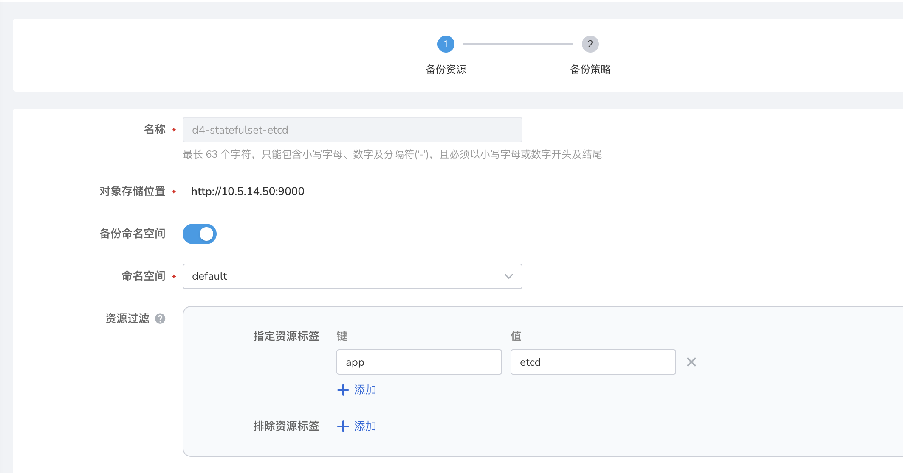
恢复
备份集群数据备份好后，将资源和数据在还原集群中恢复，操作步骤如下：
-
进入容器管理模块，点击左侧导航栏上的 备份恢复 -> 应用备份 ，进入 应用恢复 列表页面。
-
在 应用恢复 列表页面，选择恢复集群。点击右上角的 恢复备份 ，创建一个恢复备份任务。
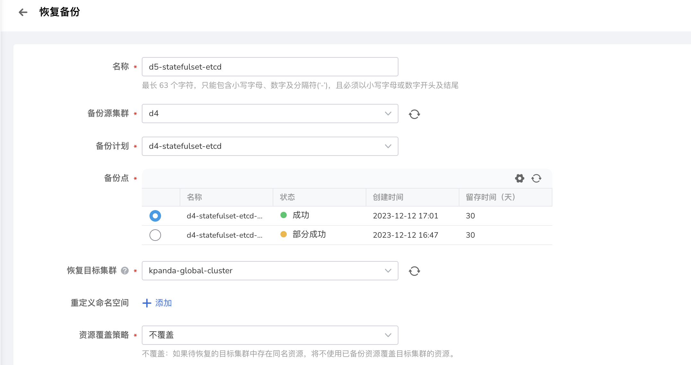
-
填写备份恢复配置，执行备份。
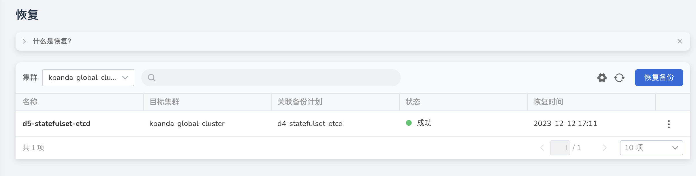
Note
- 以上迁移流程同样适用于以下资源：
- workload 的附属资源，如 secret、configmap
- 多服务场景：Helm 应用 + Redis
- namespace 资源 和 cluster 资源如果配置了 RBAC，那对应类别的资源迁移成功后对应的 RBAC 也会一并迁移到 DCE 5.0
- 以上迁移流程同样适用于以下资源：
镜像仓库镜像迁移¶
下文介绍镜像仓库镜像迁移步骤。
-
将 DCE 4.0 镜像仓库接入到 Kangaroo 仓库集成（管理员），操作步骤参考 仓库集成。
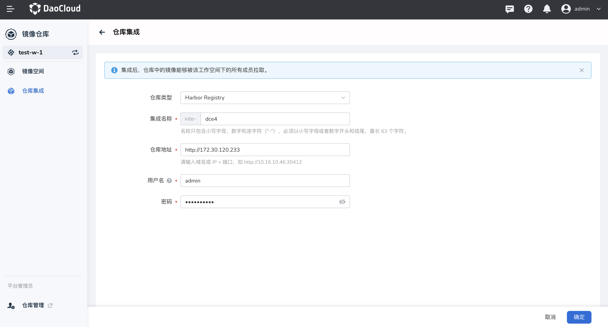
Note
- 仓库地址使用 dce-registry 的 vip 地址 ip
- 账号密码使用 DCE 4.0 管理员的账号密码
-
在管理员界面创建或集成一个 Harbor 仓库，用于迁移源镜像。
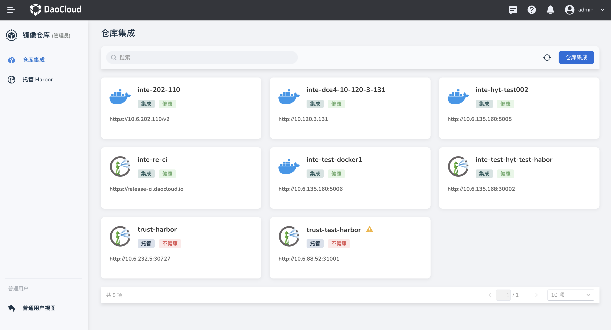
-
进入 Harbor 仓库实例配置目标仓库与同步规则，规则触发后，Harbor 会自动从 dce-registry 拉取镜像。
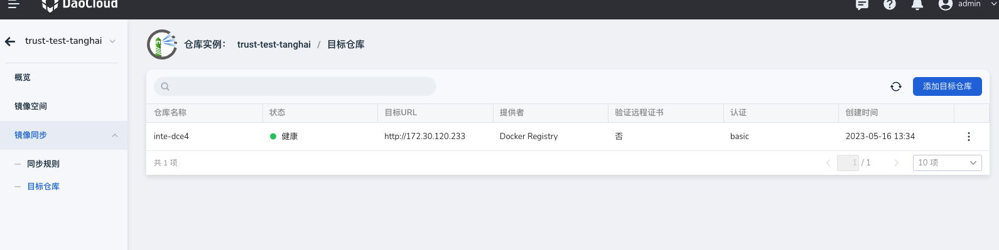
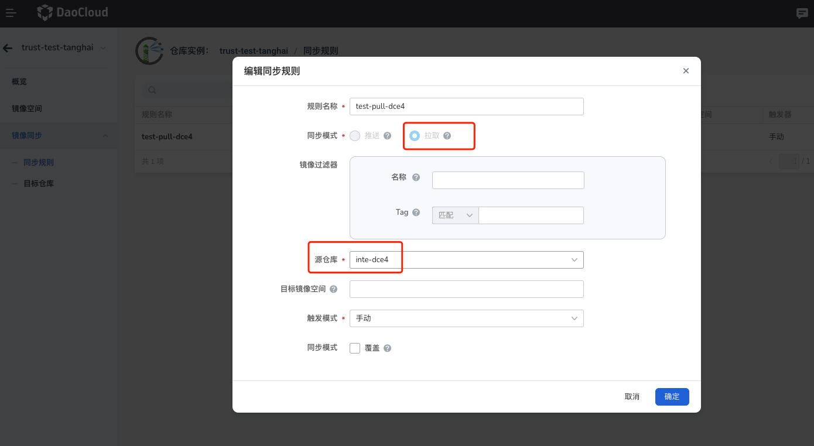
-
点击 同步规则名称，进入同步任务详情页，可以查看镜像同步是否成功。
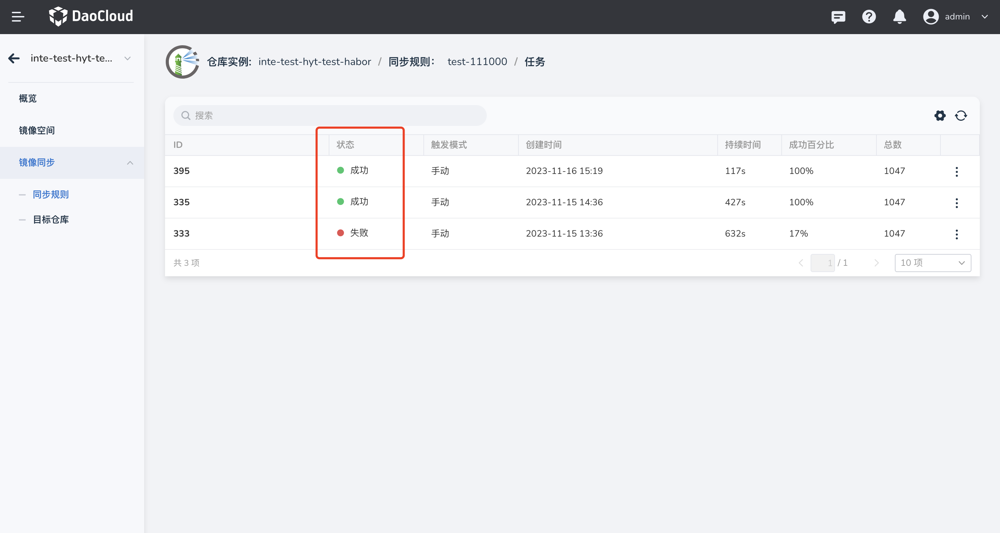
网络策略迁移¶
Calico 网络策略迁移¶
参考资源和数据迁移流程，将 DCE 4.0 中的 Calico 服务迁移至 DCE 5.0。 由于 IPPool 名称不同，会导致服务异常，请迁移后手动删除服务 YAML 中的注解，以确保服务正常启动。
Note
- DCE 4.0 中，名称为 default-ipv4-ippool
- DCE 5.0 中，名称为 default-pool
annotations:
dce.daocloud.io/parcel.net.type: calico
dce.daocloud.io/parcel.net.type: default-ipv4-ippool
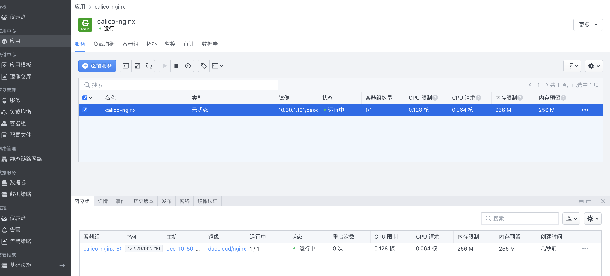
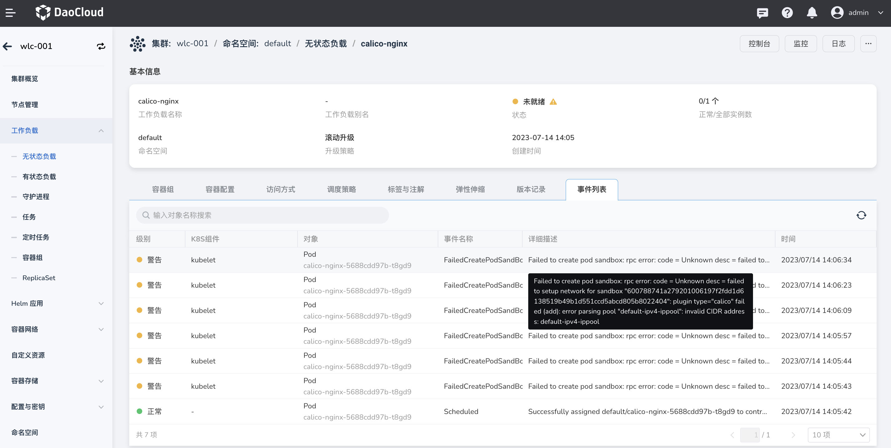
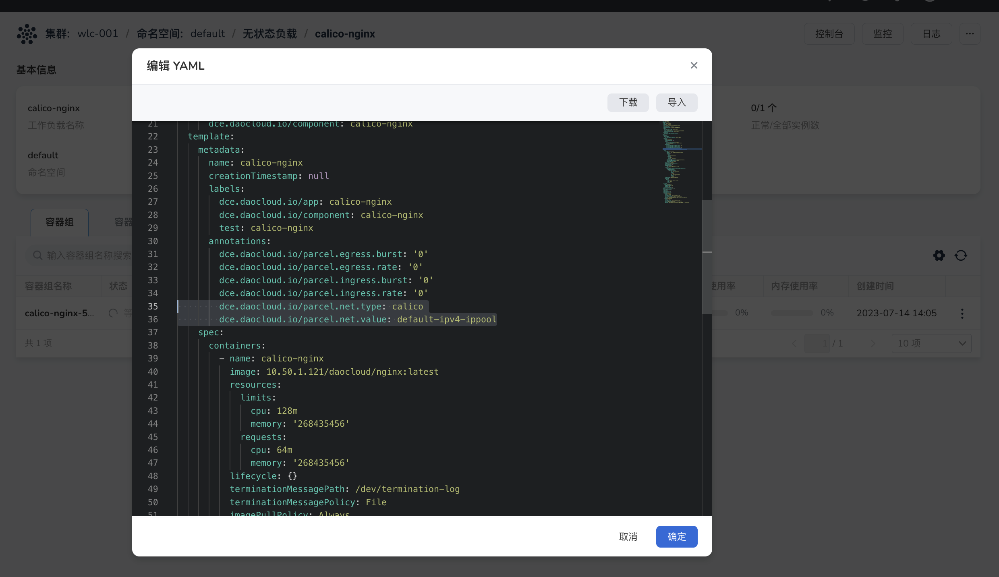
Parcel Underlay 网络策略迁移¶
下文介绍 Parcel Underlay 网络策略迁移步骤。
Note
- 迁移时，DCE 5.0 中创建的 IP 地址，应与 DCE 4.0 中使用的 IP 地址保持一致，且创建的副本数量保持一致。
-
在 还原集群 中安装 Helm 应用 spiderpool，安装流程参考安装 spiderpool 。
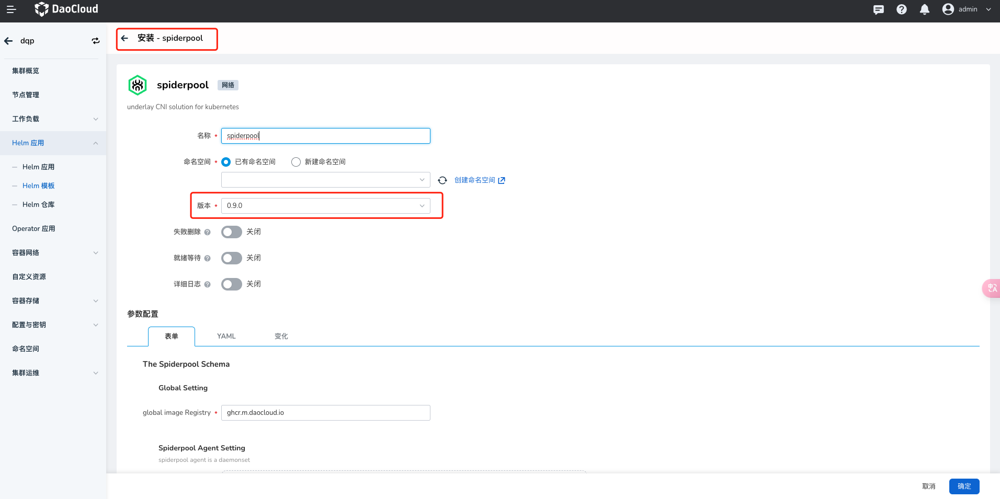
-
进入 还原集群 详情页，选择左侧菜单 容器网络 -> 网络配置 。
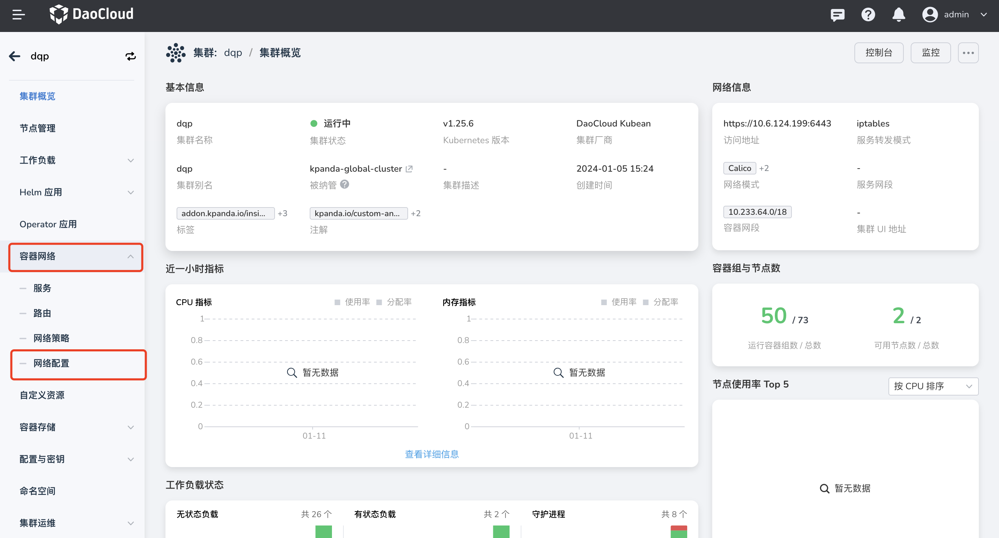
-
查看 DCE4 中使用的 IP 地址，在 DCE5.0 静态 IP 池 中创建与 DCE4 中相同的子网 IP 地址及 IP 池。子网及 IP 池的使用请参考创建子网及 IP 池 。
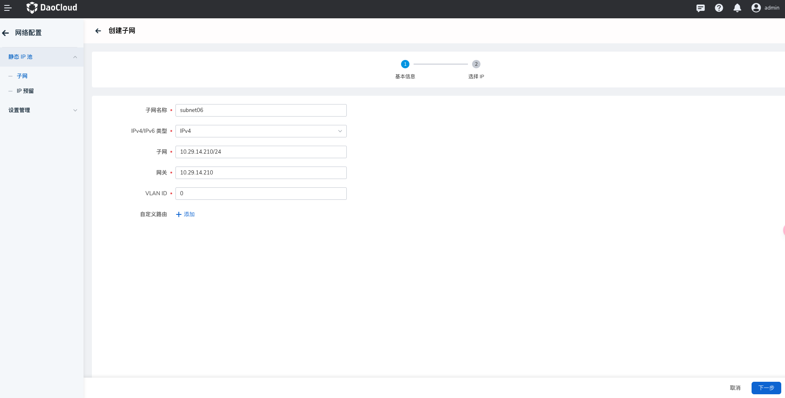
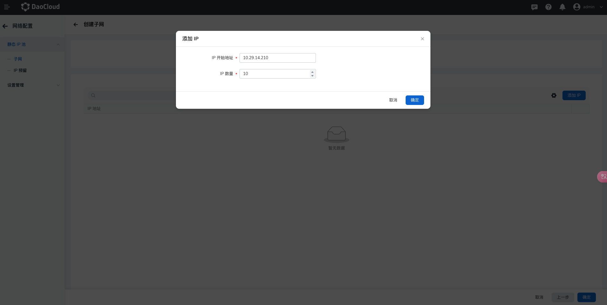
创建完子网后，在子网详情页创建 IP 池及添加 IP 开始地址与 IP 数量。
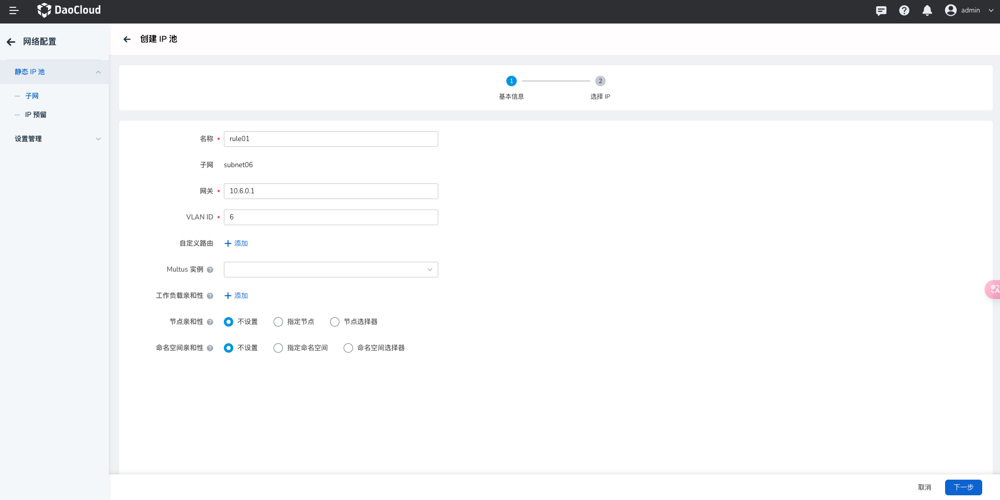
-
创建 macvlan 类型的 Multus CR 实例，并选择刚才创建好的 IP 池。 具体使用请参考创建 Multus CR
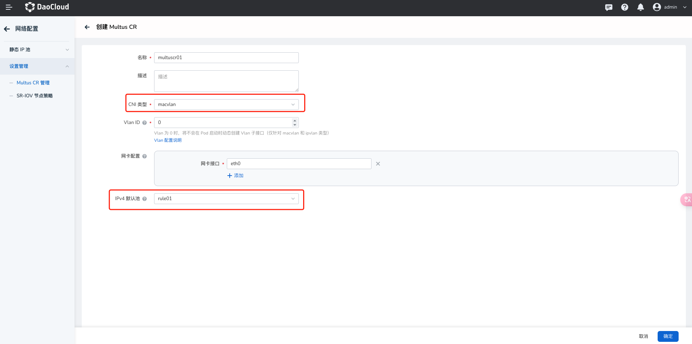
-
进入 自定义资源 界面，并手动修改
spidermultusconfigs.spiderpool.spidernet.io的detectIPConflict字段为：true，此为开启 IP 冲突检测。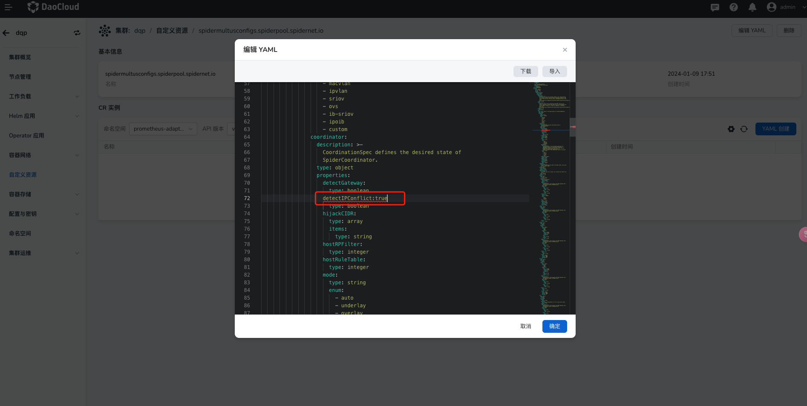
-
进入 工作负载 -> 容器网卡配置 ，网卡选择刚才创建好的 macvlan 类型的 Multus CR，网卡 IP 池选择创建好的 IP 池，点击确定创建完成。此时容器组为运行中，则代表可以正常访问。
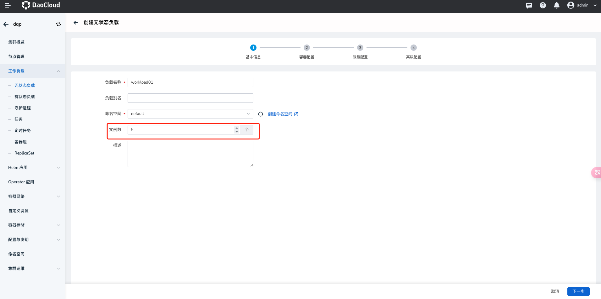
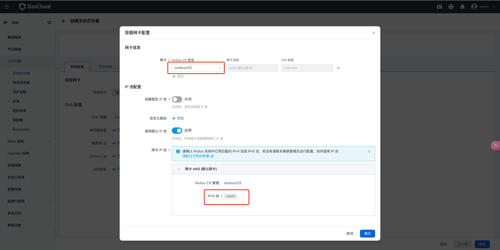
-
创建 velero dce plugin configmap。
--- resourcesSelector: includedResources: - pods - deployments resourcesConverter: resourcesOperation: - kinds: - pod domain: annotations operation: replace: cni.projectcalico.org/ipv4pools: - '["default-ipv4-ippool"]' - default-pool - kinds: - deployment domain: annotations scope: resourceSpec operation: remove: dce.daocloud.io/parcel.egress.burst: dce.daocloud.io/parcel.egress.rate: dce.daocloud.io/parcel.ingress.burst: dce.daocloud.io/parcel.ingress.rate: dce.daocloud.io/parcel.net.type: dce.daocloud.io/parcel.net.value: dce.daocloud.io/parcel.ovs.network.status: add: ipam.spidernet.io/subnets: ' [ { "interface": "eth0", "ipv4": ["d5"] } ]' v1.multus-cni.io/default-network: kube-system/d5multus -
验证是否迁移成功。
-
查看应用 YAML 中是否有 annotation。
-
查看 Pod IP 是否在 配置的 IP 池内。
-